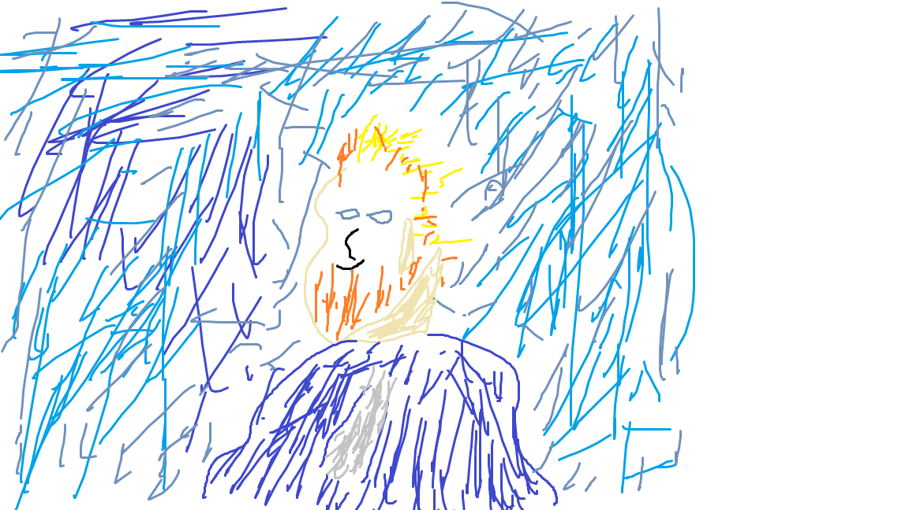

Kes ta on: Vincent van Gogh oli hollandi kunstnik, üks maailma tuntumaid postimpressionistlikke maalikunstnikke.
Kuidas ta kunstini jõudis: Van Gogh hakkas kunstiga tegelema suhteliselt hilja, alles 27-aastaselt. Ta oli enne kunstnikukarjääri mitmel erialal töötanud, kuid kunst pakkus talle tõelist huvi ja kutsumust.
Kaua ta kunstnik olnud on: Van Gogh oli kunstnikuna aktiivne vaid umbes kümme aastat, alates 1880. aastate algusest kuni oma surmani 1890. aastal.
Mis stiile kunstnik valdab/teeb: Van Gogh oli tuntud eelkõige oma impressionistlike ja postimpressionistlike maalide poolest, kus ta kasutas julgeid värve ja lühikesi pintslitõmbeid.
Näiteid töödest mis teile kunstniku portfoliost meeldib: "Tähtedeöö", "Päevalilleseeria", "Kohviku terrass öösel", "Päikeseloojang Montmajouris".
Teiepoolne ülevaade kunstniku loomingust üldiselt: Van Goghi loomingut iseloomustavad elav värvikasutus, emotsionaalne sügavus ja impulsiivne pintslitöö. Ta oli oma ajastu märkimisväärne mõjutaja ning tema tööd on jätkuvalt üle maailma tunnustatud ja armastatud.
